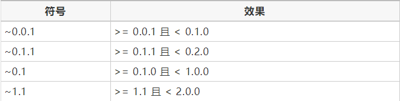
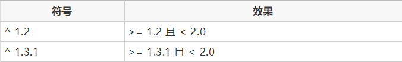
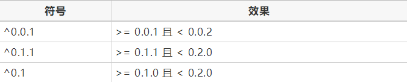

主版本号.次版本号.修订号
主版本号：当你做了不兼容的 API 修改
次版本号：当你做了向下兼容的功能性新增
修订号：当你做了向下兼容的问题修正
先行版本号及版本编译元数据可以加到“主版本号.次版本号.修订号”的后面，作为延伸。
被用于正式环境
如果有个稳定的 API 被使用者依赖
如果很担心向下兼容的问题
总而言之，由于0.x版本在机制和语义上和大于1.0的版本有一定差异，容易产生误用，被用于生产环境的包的版本号都必须>=1.0
这会确保每一个人 —— 你、你的合作伙伴、你的 CI 服务器以及你的产品服务器 —— 所运行的应用程序拥有相同依赖的版本。
该文件对使用该库的项目不会有任何影响，无法达到限制版本的目的
由于主版本的升级可能伴随着api的不兼容，如果require * 这种不限定版本的方式很可能带来不兼容的隐患，所以推荐至少锁定主版本号
例如
目前使用xxx/service的1.0.0版本，则请写~1.0或者^1.0.0，这样效果等同于>= 1.0且< 2.0，如果第三方使用时引用了xxx/service的2.0版本且引用了你的依赖1.0的版本，则会安装出错，立刻引起注意
如果 require * 则安装会正常进行，但是可能发生使用时的意外（api不兼容）
~ 的作用是允许表达式中最后一位变到最大值

++^ 锁定的是x.y.z版本号中从左到右非0的第一个版本号的版本++
比如^ 1.2.3 为锁定主版本号1；而^ 0.1.2则为锁定0.1；^ 0.0.3则为锁定0.0.3版本
所以^ 的行为在>=1.0和< 1.0的情况下存在特殊情况，使用时请特别注意，
版本大于1.0.0的情况
^ 锁定不允许变的第一位

版本为0.x的情况
^锁定的是从左到右非0的第一个版本号的版本
